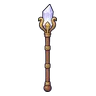
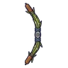
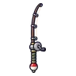
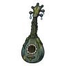
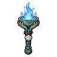
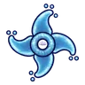
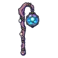
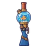

หมาป่าหิมะ
มอนธาตุน้ำ Lv 46–58
เจอที่
| แมพ | โซน | Lv | ภูมิภาค |
|---|---|---|---|
| ยอดเขาหมอกเหนือ | สันเขาพายุหิมะ | 46–58 | ดินแดนเหนือ |
| ป่าสนหิมะ | กระท่อมจมหิมะ | 48–58 | ดินแดนเหนือ |
| ธารน้ำแข็งแตก | 48–58 | ดินแดนเหนือ | |
| สันเขาหิมะถล่ม | กระท่อมโดนหิมะทับ | 48–58 | ดินแดนเหนือ |
ค่าสถานะตามเลเวล
| Lv | HP | ATK | DEF | MDEF | EXP | Job |
|---|---|---|---|---|---|---|
| 46 | 9,816 | 103–154 | 17 | 10 | 62 | 47 |
| 52 | 13,707 | 116–173 | 19 | 11 | 69 | 52 |
| 58 | 18,105 | 128–192 | 21 | 12 | 76 | 57 |
ตีด้วยธาตุไหนดี
แรงขึ้น: ลม ×1.75
เบาลง: ไฟ ×0.5 น้ำ ×0.25
วัตถุดิบที่ดรอป
| ของ | โอกาส | |
|---|---|---|
| ขนหมาป่าหิมะ | 55% | 1 ชิ้น (15% ได้ 2) |
อุปกรณ์ที่ดรอป (8)
| ของ | โอกาส |
|---|---|
 คทาควอตซ์ทองเหลือง | 0.25% |
 ธนูต้นกกหนองน้ำ | 0.12% |
 ดาบคู่คันเบ็ด | 0.12% |
 เครื่องดนตรีมือกัปปะ | 0.12% |
 คบเพลิงจานกัปปะ | 0.12% |
 ดาวยักษ์หยดฝน | 0.06% |
 ตะเกียงปลาเรืองแสง | 0.06% |
 ลูกซองโหลปลาทอง | 0.06% |
สกิล
หอนเรียกฝูง (Lv 25+) · หอนเรียกฝูง (Lv 60+) · กระโจน (Lv 60+)